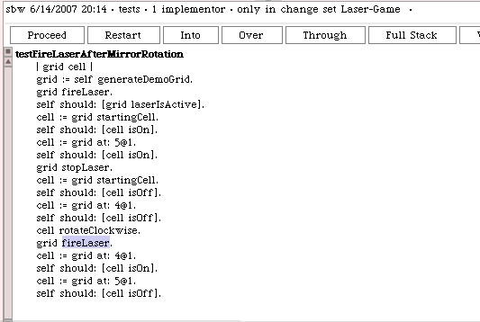
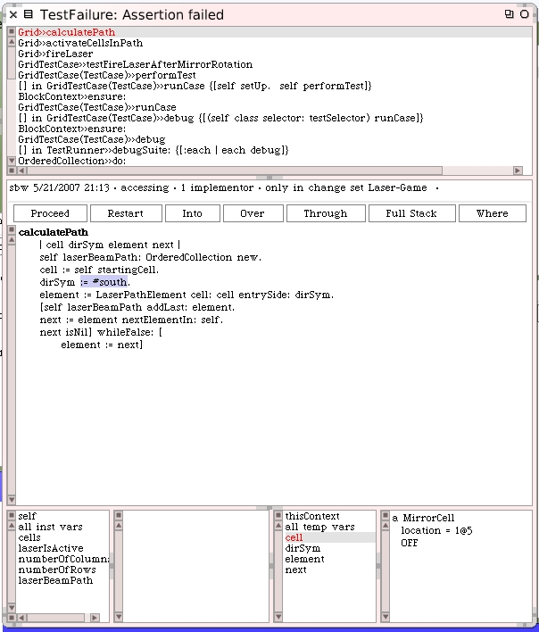
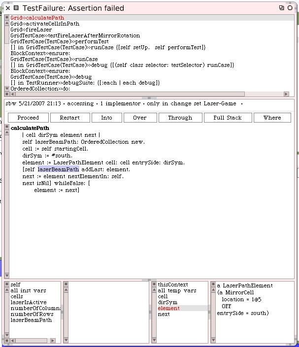

We should also enhance the grid test where we fire the laser and confirm that everything works as expected if we rotate a cell. Here's our test grid and the #testFireLaser we have so far.

We will make a new test method that rotates a mirror cell which is on the path of the laser. That should make the target inactive when we fire the laser. Here's the test.
However, something isn't working right. We have a unit test problem and it's with our new test. Pop open the debugger and look around.
Our target cell is still on yet we stopped firing the laser. And when we inspect the starting cell it's still turned on too. This sounds like an issue unrelated to rotating our mirror since the starting cell should have been off regardless.
This failure report makes me now wonder why the toggle laser test works. Let's go back and enhance that test to see if there's a similar problem.
When the unit tests are re-run there is only the failure in the mirror rotation related test we just wrote. The toggle fired laser test passes. We need to do more digging.
I added more testing within the mirror rotated laser test and it still fails. For some reason the target cell remains "lit" even when the mirror is turned.
Within the debugger I restarted the method and single-stepped until I got to the step where the laser is about to be fired again - after the mirror was rotated.
Step "Into" the #fireLaser message. Step into the #activateCellsInPath when you get to it. Step into the #calculatePath method when you get to it too.
As we start stepping through the laser path calculation we can see there's an opportunity to make debugging information a little more visible for the cells. For example I have the "cell" temporary variable selected and in the bottom right corner text pane it reports that it's a mirror cell. We can do a few simple things to make this easier.
Leave the debugger open just where it is in execution and open up a class hierarchy browser (System Browser) on the Cell class. We're going to enhance the printing output that is shown in debuggers and inspectors when one of these cell objects is selected.

First we will add a protocol named "printing" and then create this method:
Now when we click on a cell object in the debugger we see a little more helpful information than before.
The cell at 1@5 is our starting cell and it's still reporting off even though we are firing the laser because we haven't calculated the laser's path to active cells yet.
Let's do something similar to LaserPathElement.
Now as we continue to step through with the debugger we can see meaningful information about the laser path element objects too.
